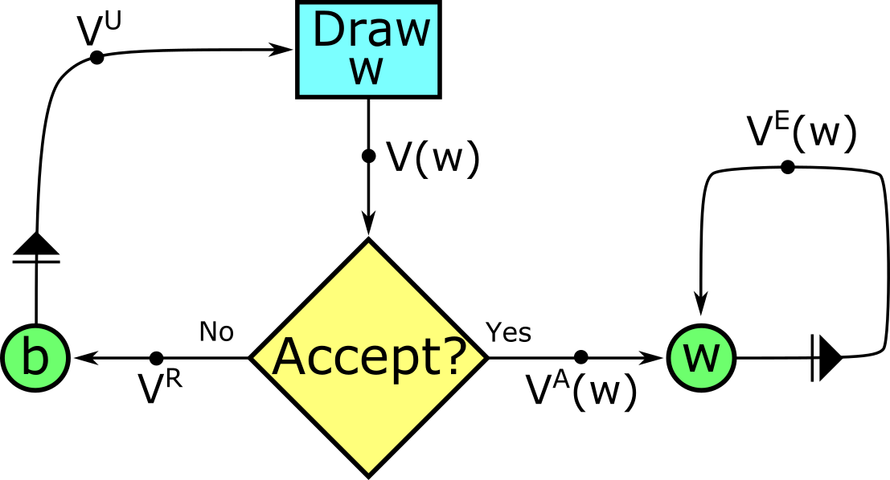

Tim's Favorite Search Problem
Setup:
The agent has preferences given by \[ \sum_{t}\beta^t c_t \]
-
If the agent is unemployed at the start of the period (state \( S^U \)), then a random wage offer \(w\) is drawn from the fixed distribution \(F(w)\), which has support \([0,B]\). The agent can choose to accept or reject the offer.
- If they accept, they earn income \(w\), and then enter the next period employed at wage \(w\).
- If they reject, they earn fixed income \(b\), and then enter the next period unemployed.
-
If the agent is employed at the start of the period with wage \(w\) (state \(S^E(w)\)), they earn income \(w\), and then enter the next period employed with wage \(w\). Jobs can never be lost.
This system can be summarized by the following diagram. (key)

The loop of being employed is on the right, and the loop of searching for a job is on the left. \(V(w)\) is the present value of having offer \(w\) in hand. \(V^U\) is the present value of starting a period unemployed.
Characterizing the Decision Rule
Note that per-period utility flow is bounded, and so with discounting, all present values are bounded as well.
\[V^R = b +\beta V^U\]
\[V^U = E[V(w)] \]
\[V(w) = \max \left\{V^A (w),V^R\right\} \]
\[ V^A (w) = V^E (w) = w + \beta V^E (w) = {w \over 1-\beta} \]
It is optimal to accept an offer iff \({w \over 1-\beta}\geq V^R\). The LHS is strictly increasing in \(w\), and the RHS is constant, though we don't know it yet. By the intermediate value theorem, there must be a reservation wage \(\bar{w}\) such that \({\bar{w} \over 1-\beta}= V^R\) and it is optimal to accept an offer iff \(w\geq\bar{w}\). Therefore:
\[ V^U = E\left[V(w)\right] = \Pr(w<\bar{w})V^R + \Pr(w\geq\bar{w})E\left[{w \over 1-\beta}\mid w\geq\bar{w}\right] \]
\[ {\bar{w} \over 1-\beta} = V^R = b +\beta V^U = b + \beta F(\bar{w}){\bar{w} \over 1-\beta} +\beta \int_{\bar{w}}^{B} {w \over 1-\beta} f(w) dw \]
The above function characterizes the reservation wage for given \(b\) and \(F\). Rearranging:
\[ 0 = \bar{w}\left({1-\beta F(\bar{w}) \over 1-\beta}\right) -b - \beta \int_{\bar{w}}^{B} {w \over 1-\beta} f(w) dw \]
You can verify that this has only one solution by evaluating the right-hand side as a continuous function of \(\bar{w}\). The RHS is negative at \(\bar{w}=0\), positive at \(\bar{w}=B\), and the derivative is strictly positive over \((0,B)\).
Comparative Statics: Increasing Unemployment Benefits \(b\).
Consider two economies with different unemployment benefits \(b_1\) and \(b_2\), but that are otherwise identical.
Let \(b_2 > b_1\). Define:
\[ \hat{b}(x) \equiv x\left({1-\beta F(x) \over 1-\beta}\right) - \beta \int_{x}^{B} {w \over 1-\beta} f(w) dw \]
From above, we know that \(b_i = \hat{b}(\bar{w_i})\). Taking the derivative,
\[ \hat{b}'(x) = \left({1-\beta F(x) \over 1-\beta}\right) - x{\beta\over 1-\beta}f(x) - {\beta\over 1-\beta} (-xf(x)) = \left({1-\beta F(x) \over 1-\beta}\right) > 0\]
So because \(\hat{b}(x)\) is continuous and strictly increasing, \(b_2>b_1 \implies \hat{b}(\bar{w_2})>\hat{b}(\bar{w_1}) \implies \bar{w_2} > \bar{w_1} \)
More intuitively, but a bit less rigourously, let \(V^U_i\) be the present value of starting a period unemployed in economy \(i\). We know that \(V^E(\bar{w_i})=b_i+V^U_i\) and so \(b_i=V^E(\bar{w_i})-V^U_i\)
Note that \(V_2^U \geq V_1^U\). If the agents in each economy follow the same strategy, and witness the same sequence of random events, then the agent in economy 2 will always have per-period income at least as high as the agent in economy 1. So it can't possibly be that \(V_2^U < V_1^U\). And so:
\[0>b_2-b_1=V^E(\bar{w_2})-V^E(\bar{w_1})-V^U_2+V^U_1 \geq V^E(\bar{w_2})-V^E(\bar{w_1})=({1 \over 1-\beta})(\bar{w_2}-\bar{w_1})\]
\[\bar{w_2}>\bar{w_1}\]
Mean Preserving Spread
Intuitively, \(b=V^E(\bar{w})-\beta V^U\), and \(\hat{b}'(x)\) is the difference between Accepting an offer of x and The discounted value of
Intuitively, the present value of accepting any given job offer doesn't change when \(b\) changes.